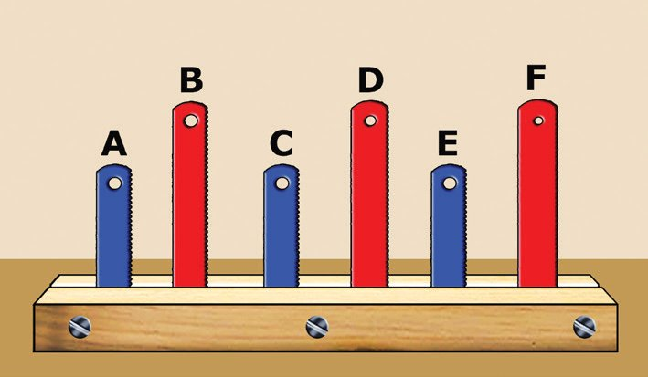
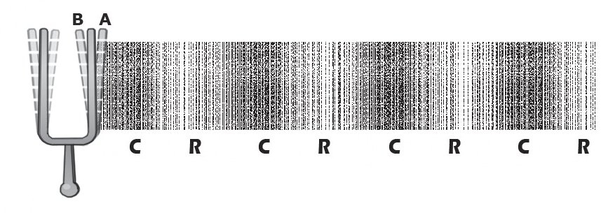
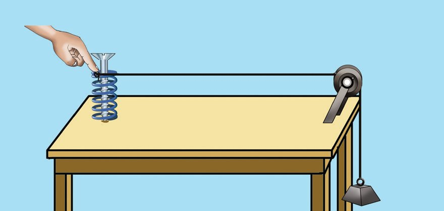
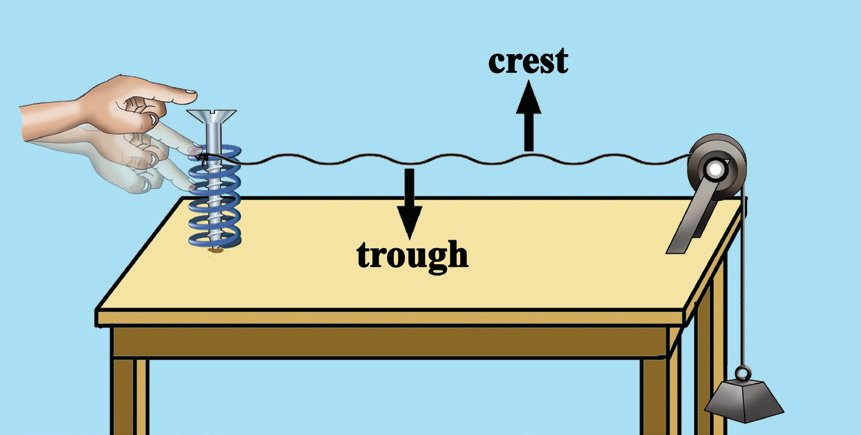
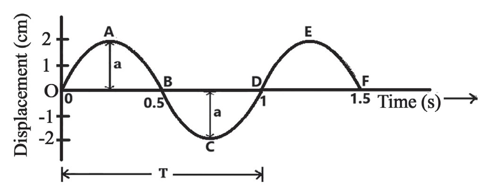
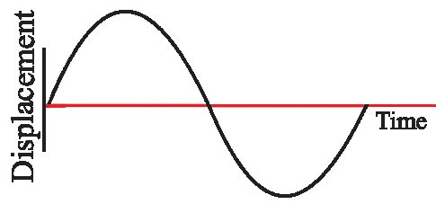
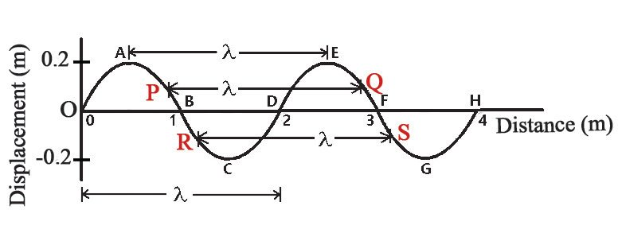

1 Sound Waves
Teacher, she
has completed
ten swings.
Please ask her
to get off the
swing. Now it's
my turn.
Yes, that's
right.
Only five
swings
I have
completed
only five
swings,
teacher
Why did the teacher agree with the child on the swing?
How should the swings be counted?
• What type of motion does the swing have?
(circular / oscillatory)
Observe the diagram showing the motion of the swing.
• What is the initial position of the swing when it starts oscillating
from its free state (equilibrium position)?
(A / O / B)
Oscillation is a periodic motion in which an object moves to and fro
at regular intervals of time about its equilibrium position.
• In the figure, what is the maximum displacement to one side from
the equilibrium position?
(2a, 2a , a)
The magnitude of maximum displacement to one side from its
equilibrium position is amplitude. The symbol of amplitude is a. The SI
unit of amplitude is metre (m).
• When does the swing complete one oscillation?
(when the pendulum starts from O, reaches A and returns to O / when
the pendulum starts from O, reaches A, then to B and back to O)
A swing completes one oscillation when the pendulum starts
from O, goes to both sides and then returns to O [Fig 1.1(b)].
Fig. 1.1(b)
Fig. 1.1(c)
An oscillation is completed when the body returns to its
initial position in the same direction from where it started.
What if counting starts from A? A swing completes one
oscillation when it starts from A, reaches B and returns to A
[Fig 1.1 (c)].
What could be the reason that the number of
oscillations counted by the child waiting for his turn
to swing and the child on the swing were different?
Discuss and find out. Now you have understood
how to count oscillations accurately.
Give more examples of oscillatory motion.
Fig. 1.2
In early pendulum clocks
(Grandfather’s clock), pendulum
(seconds pendulum) of length
99.35 cm (about 1 m) was used. It
was made of an alloy called invar
(invar-invariable).
• Motion of the pendulum of a clock
•
Have you ever noticed how many oscillations the
pendulum in a clock completes for a time change of
one minute?
• If a pendulum takes 1 minute to complete 30
oscillations, how long does it take to complete
one oscillation?
Time for 30 oscillations = 1 minute = 60 s
Time for 1 oscillation
The time taken for one oscillation is called
period. Its symbol is T. SI unit of period is
second (s).
• Find the number of oscillations the same
pendulum completes in one second.
Number of oscillations in 1 minute (60 s) = 30
Heinrich Rudolf Hertz
Lifetime : 1857 - 1894
Place of birth : Hamburg, Germany
Major contributions : Experimentally
proved the presence of electromagnetic
1
= 2 = 0.5 waves. Laid the foundation for the
future advancements of the radio,
telephone, telegraph and television.
The number of oscillations in one
Discovered photoelectric effect. The
second is called frequency. The SI unit
unit of frequency was named hertz, to
of frequency is hertz (Hz). Frequency is
honour him.
denoted by the letter f.
∴ Number of oscillations in 1 second = 30
60
Let’s find the period and frequency of a pendulum
by swinging it at low amplitude. Tie a bob to a
string and hang it on a stand. This system is called
a simple pendulum. Complete table 1.1 by doing
an experiment using a simple pendulum, meter
scale, and a stopwatch.
,
Fig. 1.3
Length
Period (T)
Frequency (f)
of the
Total time
Time taken
Number of oscillations
=
=
pendulum
for 10
Time
Number of oscillations
(,)
oscillations
Hz
s
s
cm
25
60
100
Table 1.1
• What is the change in frequency when the length of the pendulum
increases? (increases / decreases)
When the length of the pendulum increases, frequency decreases.
• What is the relation between period and frequency?
The time required for one oscillation = T
Number of oscillations per second = f
1
period (T)
As the period increases, frequency decreases.
Frequency (f) =
In radio and television transmission
you may have heard the units
kilohertz and megahertz. These are
also practical units of frequency.
1 kHz =1000 Hz = 103 Hz
1 MHz =1000000 Hz = 106 Hz
Aren't tuning forks used for experiments connected
with sound? Have you noticed the marking on
them? Observe various tuning forks and note down
the markings on each of them with their units.
• 256 Hz
Is there any relation between the marking on the
tuning fork and its number of vibrations?
The marking on a tuning fork indicates the frequency of the tuning
fork. Excite tuning forks of different frequencies in a similar manner
and listen to the sound.
• Do you feel any difference?
Note the frequency marked on each of them.
• Isn't the difference in frequency the reason for the difference in
sound here?
Find the number of times each tuning fork vibrates independently in
one second using the ICT facility (Audio Frequency Counter).
When an object vibrates freely, it vibrates in its innate frequency. This is
the natural frequency of that object.
Factors that influence the natural frequency of an object :
Length of the object
Size of the object
Elasticity
Nature of the material etc.
Change in any one of these factors will affect the natural frequency
of an object.
Do all objects vibrate only in their natural frequency?
10
Page 11
Figure fig_ch01_p011_01 (Page 11)

Figure fig_ch01_p011_02 (Page 11)
Sound Waves
Forced Vibration & Resonance
Have you ever felt the vibration of the table when a mixie kept on
the table works?
Excite a tuning fork and listen to it. What is the change
in the sound heard when the stem of the excited tuning
fork is pressed on the table? What could be the reason
for the sound being louder?
In this case, the sound became louder because the
table also vibrated along with the tuning fork.
Forced vibration is the vibration of an object
induced by an external vibrating object.
Observe figure 1.5 (a).
Fig. 1.4
Try the activities given below using the device in
which two sets of three identical hacksaw blades each
of length about 13 cm and 17 cm are fixed between
two wooden blocks.
• Excite the hacksaw blade A by tapping with your
finger. What do you observe?
(all blades vibrate / only A vibrates)
Fig. 1.5 (a)
• Are all the blades vibrating with the same
amplitude?
• Which of them vibrates with maximum amplitude?
• After all the blades have stopped vibrating, excite B and record the
observation in the science diary.
• When blade A vibrates why would the hacksaw blades C and E
vibrate with maximum amplitude?
Since the natural frequency of C and E are equal to the natural
frequency of A, they vibrate with maximum amplitude.
If the natural frequency of the forcing object and that of the forced
object are equal, the objects are said to be in resonance. The objects
undergoing resonance will vibrate with maximum amplitude.
• Immerse in water a PVC pipe of about 50 cm length and 4 cm
(1½ inch) diameter. Excite a tuning fork of frequency 512 Hz and
hold it close to the mouth of the pipe. Vary the length of the air
column inside the pipe by gradually raising both the tuning fork
and the pipe. Don’t you hear a louder sound at a particular stage?
What could be the reason for this? Record in your science diary.
Applications of forced vibration and resonance
MRI scanning
Radio tuning
Fig. 1.5 (b)
Fig. 1.6 (a)
In musical instruments like guitar, violin, veena, harmonium,
mridangam etc.
Can't you hear even the faintest sound of the heartbeat when you
listen to it using a stethoscope? A stethoscope used to listen to
even a feeble sound in the body utilises forced vibration and
resonance.
In instruments like megaphones, horns and musical instruments
such as trumpets and nagaswaram.
The frequency of a simple pendulum is 1 Hz. What is
its period?
If a pendulum takes 0.5 s to complete one oscillation,
what is its frequency?
Fig. 1.6 (b)
A tuning fork of frequency 512 Hz is excited and its
stem is pressed on a table. Does the table vibrate in this
situation? What is this phenomenon known as?
When a tuning fork of frequency 256 Hz vibrates, the air around it
and the eardrum of the person hearing that sound vibrate 256 times
per second.
How does the air near it vibrate when the tuning fork
vibrates?
Wave Motion
12
A child conducted an experiment in connection with the transmission
of sound in the school science club. A scene during the experiment
is illustrated here.
Place light paper balls
inside a long, transparent
tube closed at one end. Pass
a loud sound with uniform
frequency through the free
Fig. 1.7
end of the tube. The paper
balls are seen vibrating
back and forth from their equilibrium position. Without moving
the paper balls to the other end, they are found to be close in some
regions and apart in some other regions alternately. How is it
formed?
PhET→ Sound waves
Let's do an activity.
Stretch both ends of a slinky placed on a table as shown in
figure 1.8 (a).
Compress and release a few coils at one
end of the slinky. Notice the disturbance
formed in the slinky.
Move one end of the slinky back and
forth as shown in figure 1.8 (b). What do
you observe?
Fig. 1.8 (a)
Don’t you see the disturbances formed in the
slinky moving from one end to the other?
• Are the coils in the slinky moving towards
the other end along with the disturbances?
Fig. 1.8 (b)
It is seen that the disturbance formed in one part of the slinky spreads
to the other parts without any displacement of the coil.
Here the energy received in one part of the medium spreads to the
other parts by transferring it to the adjacent part and so on.
Wave motion is one of the modes of transfer of energy from one part
of the medium to other parts.
The continuous propagation of energy from one part to the other
parts through oscillations is called wave motion.
13
Page 14

Figure fig_ch01_p014_01 (Page 14)
Physics Standard - X
Some examples of waves are given below :
Radio waves
Seismic waves
Light waves
Sound waves
Ripples on the surface of water
• Do all these waves require a medium to travel? Complete table 1.2
appropriately.
Waves that require a medium
for transmission
• Seismic waves
•
Waves that do not require a medium
for transmission
• Radio waves
•
Table 1.2
Electromagnetic Waves
Radio waves, microwaves, infrared rays, visible light, ultraviolet
rays, X-rays and gamma rays are electromagnetic waves. They do
not require a medium for transmission.
Mechanical Waves
Mechanical waves are those that require a medium for transmission.
Mechanical waves are mainly of two types. They are longitudinal
waves and transverse waves.
Longitudinal Waves
• In figure 1.8 (b), did the coils in the slinky move parallel or
perpendicular to the direction of propagation of the wave?
Longitudinal waves are those in which the particles in the medium
vibrate parallel to the direction of propagation of the wave.
14
Pressure variations occurring in air
when the tuning fork vibrates
Fig 1.9
We have studied that sound requires a
medium for transmission. Let's see how
sound travels through air. Observe the
picture.
Page 15

Figure fig_ch01_p015_01 (Page 15)

Figure fig_ch01_p015_02 (Page 15)
Sound Waves
• In figure 1.9, as the prong of the tuning fork moves from the
equilibrium position to the side A, the air pressure on that side
(increases / decreases).
• What about the air pressure on side A when the same prong moves
to side B?
• When the prongs of the tuning fork vibrate continuously, aren’t
regions of high and low pressure formed intermittently in the air?
• Compare the wave produced in the slinky with the wave produced
by the tuning fork in the air.
Sound from a source creates continuous and regular pressure
variations in the air. A region of high pressure is created where
distance between the air molecules decreases. Such regions are
called compressions (the region denoted by C in the figure) and a
region of low pressure is called rarefactions (the region denoted by R
in the figure). Sound travels through a medium forming alternating
compressions and rarefactions. You have now understood that sound
is a longitudinal wave.
Transverse Waves
Try an activity.
Fix a spring vertically on a table using a nail.
Tie one end of a string to the top of the spring
and the other end to a 50 g slotted weight. Pass
the string through the pulley fixed at the end of
the table as shown in the figure.
Fig. 1.10 (a)
Press and release the spring continuously. What do you observe?
• What is the direction of motion of the particles in the string, with
respect to the equilibrium position? (parallel / perpendicular)
• Does each point on the string move parallel or
perpendicular to the direction of propagation
of the wave formed in the string?
• Do the particles on the string undergo
resultant translatory motion other than
moving vertically up and down from their
equilibrium position?
Fig. 1.10 (b)
When the particles of a medium vibrate perpendicular to the direction of
propagation of the wave they are called transverse waves.
Observe the transverse waveform shown in figure 1.10 (b). In transverse
waves, the elevated portions from the equilibrium position are called crests
and the lowest portions from the equilibrium position are called troughs.
Place a slinky on a table. Stretch both
ends of it. Hold one end of the slinky and
oscillate it as shown in figure 1.10 (c).
• Are the coils moving parallel or
perpendicular to the waveform created
Fig. 1.10 (c)
on the slinky?
• What type of waveform is formed in the slinky?
Electromagnetic waves are transverse waves.
Some of the characteristics related to transverse waves
and longitudinal waves are given below. Classify them and
complete the table.
• Particles in the medium vibrate perpendicular to the direction of
propagation of the wave.
PhET→ Wave on a
String
• Compressions and rarefactions are formed.
• Pressure variations occur in the medium.
• Crests and troughs are formed.
• Particles in the medium vibrate parallel to the direction of
propagation of the wave.
• No pressure variations occur in the medium.
Longitudinal waves
Transverse waves
• Particles in the medium
Particles in the medium vibrate perpendicular
vibrate parallel to the
to the direction of propagation of the wave.
direction of propagation •
of the wave.
•
Table 1.3
What are the features of waves?
16
Page 17

Figure fig_ch01_p017_01 (Page 17)

Figure fig_ch01_p017_02 (Page 17)

Figure fig_ch01_p017_03 (Page 17)
Sound Waves
Characteristics of Waves
The main characteristics of waves are :
Amplitude
Frequency
Period
Wavelength
Speed of wave
Amplitude
The displacement-time graph of a
particle in a wave is depicted.
• In the figure, which are the points
with maximum displacement
from the equilibrium position of
the wave?
Fig. 1.11
(A, B, C, D, E)
• What is the amplitude of this wave?
Cycle
Period
A cycle is one complete
• In figure 1.11, what is the time taken by the particle in the oscillation of a particle in
wave motion.
medium to complete one vibration?
• What is the period of the wave in the figure?
Frequency
The frequency of a wave is the number of cycles that pass
through a point in one second.
Fig. 1.12
• If the wave shown in figure 1.11 takes 1 s to travel from
O to D, find the frequency of the wave.
Wavelength
The state of the particles in a wave at a particular time is depicted in
figure 1.13 (a).
Wavelength is the distance
between two consecutive particles
which are in the same phase
of vibration. It is the distance
travelled by the wave during the
time taken by each particle in the
Fig. 1.13 (a)
medium to complete one vibration.
The distance between two consecutive crests or two consecutive troughs
is also considered as the wavelength of a transverse wave.
The Greek letter λ (lambda) is used to denote wavelength. The unit of
wavelength is metre (m).
• In figure 1.13 (a), which particle is in the same phase of vibration as
particle A? (B, C, D, E)
• In the case of particle P?
• In the case of particle B?
• In figure 1.13 (b), which represents the wavelength (λ)? (CR, RR)
m
• Here CR represents (λ, m
2, 4 )
Fig. 1.13 (b)
The distance between two
consecutive compressions or
two consecutive rarefactions is
considered as the wavelength of
a longitudinal wave.
Speed of wave
The speed of a wave is the distance travelled by the wave in one second.
The unit of speed of a wave is m/s.
• If a wave travels 700 m in 2 s, what is the speed of the wave?
Is there a relation between frequency and wavelength?
Place a slinky on a table. Stretch both ends of it. Hold one end of the
slinky and oscillate it to produce a transverse waveform. Then increase the
frequency of oscillation. Observe the change in frequency and wavelength
of the waveform generated in the slinky.
If the frequency of the wave is changed, will the wavelength change?
An illustration of two waves of the same amplitude passing through a
medium at the same time interval is given.
Fig. 1.14 (a)
• In figure 1.14 (a), what is the
wavelength of the wave?
• What is the wavelength of the
wave in figure 1.14 (b)?
Fig. 1.14 (b)
18
• In figure 1.14 (a), if both the waves take 1 s to travel a distance of
12 m, what is the frequency of the wave?
• In figure 1.14 (b), what is the frequency of the wave?
• Which wave has a longer wavelength?
• Which wave has a higher frequency?
• What is the relation between wavelength and frequency?
The time taken by both the waves to travel a distance of 12 m is
equal. So the speed of the wave will be equal.
When the speed is constant, frequency of the wave is inversely proportional
1
to the wavelength. f ∝ m
The relation between the speed of wave, frequency and wavelength
Analyse figure 1.15 and answer the
questions given below.
• What is the wavelength (λ)?
• If the wave takes 1 s to reach A from O,
what is the frequency (f)?
• Isn’t the speed of a wave the distance
Fig.1.15
travelled by it in one second? What is
the speed of the wave (v)?
• Find the relation between wavelength, frequency and speed of a wave. It is found that
the speed of a wave is the product of its wavelength and frequency.
Speed of a wave = frequency × wavelength
ie, v = f λ
The state of the
particles in a wave
at a particular time
is depicted in the
Fig.1.16
figure.
a) How many crests are there in the figure?
b) How many troughs are there?
c) What is the wavelength?
If the frequency of a longitudinal wave travelling at a speed of
350 m/s in the air is 35 Hz,
a) What is the distance between two consecutive compressions
of this wave?
b) What about the distance between two consecutive
rarefactions?
A sound wave with a frequency of 175 Hz has a wavelength
of 2 m. Calculate the speed of sound.
Sound and light are waves. Light reflects. Can sound
also reflect?
Reflection of Sound
Do sound waves reflect when they hit objects? Let’s see.
Arrange two PVC pipes of 1 metre in length,
a glass plate and an alarm clock as shown in
the figure.
Adjust the pipe B at different angles and
listen to the ticking sound from the clock.
What could be the reason for the ticking
sound being heard from the clock through
the pipe B?
Fig. 1.17
The sound is heard through the pipe B
because sound waves reflect after striking
the glass plate.
Repeat the experiment using rough surfaces instead of glass plate.
• Don’t you feel a decrease in the loudness of the reflecting sound?
What is the reason?
Smooth surfaces reflect sound more effectively than rough surfaces.
Reflection of sound is utilised in :
Soundboards [Fig.1.18 (a)]
Curved ceilings in halls
[Fig. 1.18 (b)]
These help to reflect sound from
a source and spread it to all parts
of the hall.
Multiple Reflection of Sound
The figure shows how sound from a source
reaches a listener in a closed hall.
• Does sound from a source always travel
directly to the listener?
Reflected sound waves get reflected again.
This is multiple reflection of sound.
Fig. 1.19
Are there instances when reflected sounds are heard
distinctly?
Echo
Have you ever had the experience of making
a loud sound at the echo point and hearing the
same sound again after a while?
While speaking loudly in a closed and empty
large hall and calling or clapping loudly at a
distance from a great mountain, isn’t it possible
to hear the same sound again after a while?
This is possible due to the phenomenon of echo.
Fig. 1.20
Echo is the sound heard after a while due to the reflection of the initial
sound.
Why don’t we hear echo inside a small room?
What should be the minimum distance from the listener to the
reflecting surface, if the first sound is to be heard distinctly after
reflection?
1
The auditory experience produced by a sound persists for about 10
of a second. This characteristic is known as persistence of hearing.
If another sound falls on the ear during this time, it is felt as if they
are heard together.
• How long will it take to hear the echo distinctly after hearing the first
sound?
• How far does the sound travel during this time?
(Consider the speed of sound in air as 350 m/s.)
Distance = speed × time
= 350 m/s × c 10 m s = 35 m
1
For the echo to be heard, the reflecting surface must be at least 17.5 m
away, ie, half of 35 m. If the distance to the reflecting surface is more than
17.5 m, the same sound can be heard and distinguished again.
The echo of fire cracker (kathina) is heard after 1 s by the
person who burst it. How far is the reflecting surface from the
person hearing the echo? (speed of sound in air is 350 m/s).
Let d be the distance to the reflecting surface. Then the total distance
travelled by the sound to the reflecting surface and back will be 2d.
Speed of sound = Total distance travelled
Time
2d
v = t
^v # t h
d= 2
away.
=
^350 # 1 h m
2
= 175 m. The reflecting surface will be 175 m
What should be the minimum distance between the source and
the reflecting surface to hear the echo in water? (Consider the
speed of sound in water as 1480 m/s)
If sound is made in an empty room, why is a boom
felt?
Reverberation
Even if a small sound is produced inside the
whispering gallery of Gol Gumbaz in Bijapur,
Karnataka, it can be heard repeatedly throughout
the gallery. This is due to the boom caused by the
multiple reflections of sound waves on the spherical
walls.
Fig. 1.21
Reverberation is the lingering of sound, even after the original sound has
ceased. It is due to the multiple reflection of sound and the boom fades
away gradually.
Why are the walls of large halls like cinema theatres made rough?
Can a person with normal hearing ability hear all sounds?
Limits of audibility
Note the limits of frequency of sound audible to humans in figure 1.22.
ultrasonic
audible to humans
dogs
Infrasonic
seismic waves
pigeons
moths
elephants
bats
cats
Fig. 1.22
The frequency of sound produced in a
galton whistle used for training dogs is
about 30000 Hz.
• Can humans hear the sound of a galton
whistle?
There are high and low-frequency
sounds in nature. But humans cannot
Fig. 1.23
hear the sound of all frequencies.
That is, there is a limit to the range of frequency of sounds that
humans can hear. For a person with normal hearing, the lower
limit of audible sound is about 20 Hz and the upper limit is about
20000 Hz (20 kHz). Sound with a frequency below 20 Hz is
infrasonic. Sound with frequency more than 20000 Hz is ultrasonic.
23
Using ultrasonic sound, bats
can travel smoothly and catch
prey easily even in the dark.
Ultrasonic waves are used in
many situations.
Fig. 1.24
Uses of Ultrasonic Waves
In the medical field, ultrasonic waves are used for
diagnosis and treatment.
To crush small stones in the kidneys.
In physiotherapy
To take images of internal organs such as kidney,
liver, gall bladder and uterus.
Fig. 1.25
Ultrasonic waves that travel through body tissues strike
and reflect at areas of varying density in the tissues.
These waves are converted into electric signals to form
an image of the organ (Fig. 1.25). This technique is ultra
sonography.
For cleaning spiral tubes, irregular machine parts,
electronic components etc. (Fig. 1.26).
Fig. 1.26
Fig. 1.27
24
In the device called SONAR which is used to find
the distance to the underwater objects (Fig. 1.27).
If an ultrasonic wave emitted by a transmitter,
installed on a ship on the surface of the water,
strikes a rock at the bottom of the sea and
returns after 0.2 s, what is the distance from
the ship to the rock? Consider the speed of
ultrasonic waves in seawater as 1522 m/s.
Can waves cause any harm?
You have understood the characteristics and uses of different types of
waves. Any type of wave above a certain intensity can cause harmful
effects. There are also destructive waves.
Seismic Waves and Tsunami
A building that was destroyed by the earthquake is seen in figure 1.28.
Earthquakes often cause disaster.
Seismic waves are those which travel through the Earth's
crust as a result of earthquakes, volcanic eruptions, and
massive explosions. Seismology is the study of seismic
waves. The intensity of earthquakes is determined by the
Richter scale.
Earthquakes that occur at the bottom of oceans or along
coastal areas can sometimes trigger tsunami waves
(Fig. 1.29). Tsunami is a series of gigantic ocean waves
caused by the displacement of large volumes of water in
the sea.
• What measures can be taken to safeguard against
tsunamis? Discuss and make notes.
Follow the instructions given by the official tsunami
warning centres.
Fig. 1.28
Fig. 1.29
1. Which of the following statements is correct?
a) Sound and light are transverse waves.
b) Sound and light are longitudinal waves.
c) Sound is a longitudinal wave and light is a transverse wave.
d) Sound is a transverse wave and light is a longitudinal wave.
2. The upper limit of frequency of sound that a bat can hear is 120 kHz. If so, what
is the maximum wavelength of sound it can hear? Consider the speed of sound as
350 m/s.
25
A graphic illustration of two waves
travelling at a speed of 3.2 m/s is
given.
a) Find out the frequency, period,
and wavelength of each wave.
Fig. 1.30 (a)
Fig. 1.30 (b)
4. Which of the following frequency can be heard by humans?
a) 5 Hz b) 2000 Hz c) 200 kHz
d) 50 kHz
5.
6.
7.
A wave has a frequency of 2 kHz and a wavelength of 35 cm. How far does this
wave travel in 0.5 s?
What is the frequency of a wave that produces 50 crests and 50 troughs in 0.5 s?
Which of the following is
different regarding the waves
given in the figures 1.31 (a)
and 1.31 (b)?
(frequency, amplitude,
wavelength)
Fig. 1.31 (a)
Fig. 1.31 (b)
8. The distance between two adjacent troughs of a transverse wave is 2 m. Find the
frequency if its speed is 20 m/s.
9. When sound passes through a medium, …………….. travels.
(the particles in the medium / the wave / the source of sound / the medium)
10. Two pith balls are suspended near the two prongs of a tuning fork fixed on a table
so as to touch the prongs. A person plays a piano sitting near this system.
a) In this case the pith balls move slightly. What is the reason?
(forced vibration / echo)
b) While playing certain notes on the piano, the pith balls are thrown to a maximum
distance. Which phenomenon is responsible for this?
(reverberation / resonance)
1. Plan an activity that illustrates the resonance of sound.
2. Prepare and present a seminar paper on the topic : 'Ultrasonic Waves and their
Applications.'
26